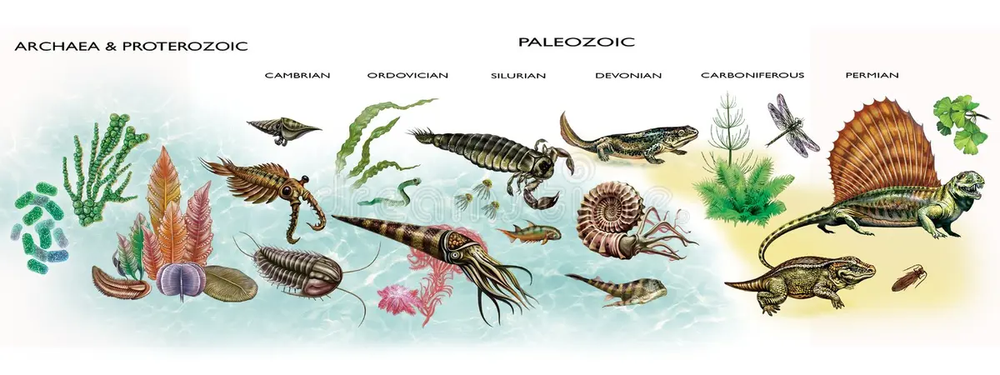

Le Protérozoïque (≈2,5 milliards à 541 millions d’années) est une très longue période de l’histoire de la Terre marquée par des transformations majeures de la vie et de l’atmosphère. C’est durant cette ère que les premiers organismes complexes apparaissent, notamment les eucaryotes, cellules possédant un noyau. Progressivement, la vie évolue vers des formes multicellulaires simples, et les océans deviennent le principal milieu de développement du vivant.
Un événement fondamental du Protérozoïque est la Grande Oxydation, qui enrichit l’atmosphère en oxygène grâce à l’activité de micro-organismes photosynthétiques. Ce changement permet l’émergence de formes de vie plus complexes et transforme profondément les écosystèmes. Vers la fin de cette période, les premières formes animales apparaissent, notamment la faune édicarienne, composée d’organismes marins mous, marquant les débuts de la vie animale visible.
Cette ère marque la transition vers le Paléozoïque, où la vie se diversifie fortement dans les océans et commence à coloniser les continents.

Jouez et tentez d'esquiver un maximum d'oiseaux préhistoriques !